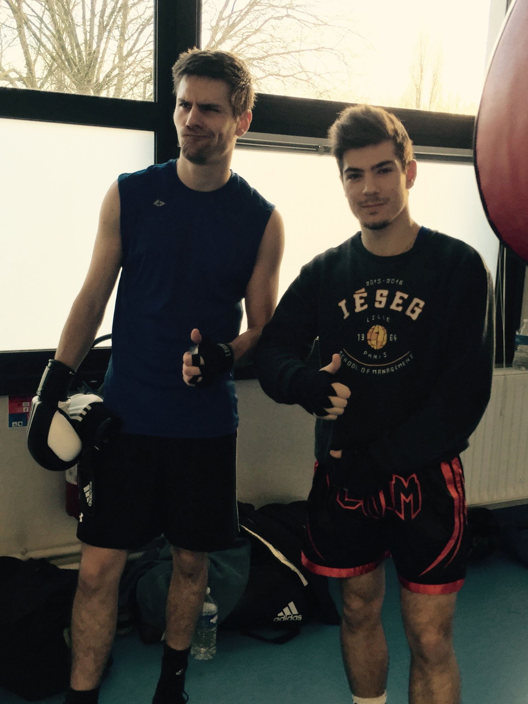

Le retour de la boxe après la pandémie
Avec la réouverture des gymnases, les boxeurs reprennent leurs entraînements intensifs et se préparent pour des compétitions passionnantes. L'IESEG soutient ces athlètes à travers des initiatives de bien-être.
